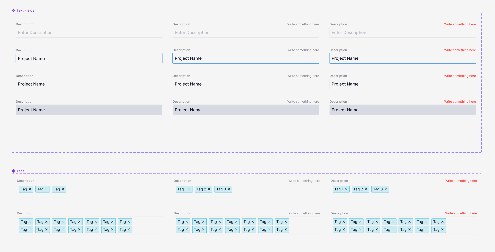
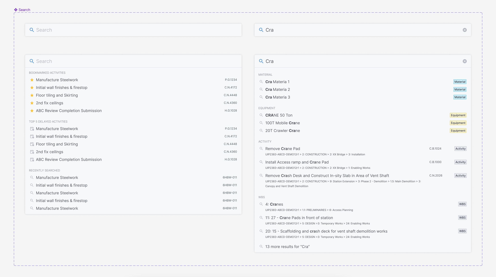
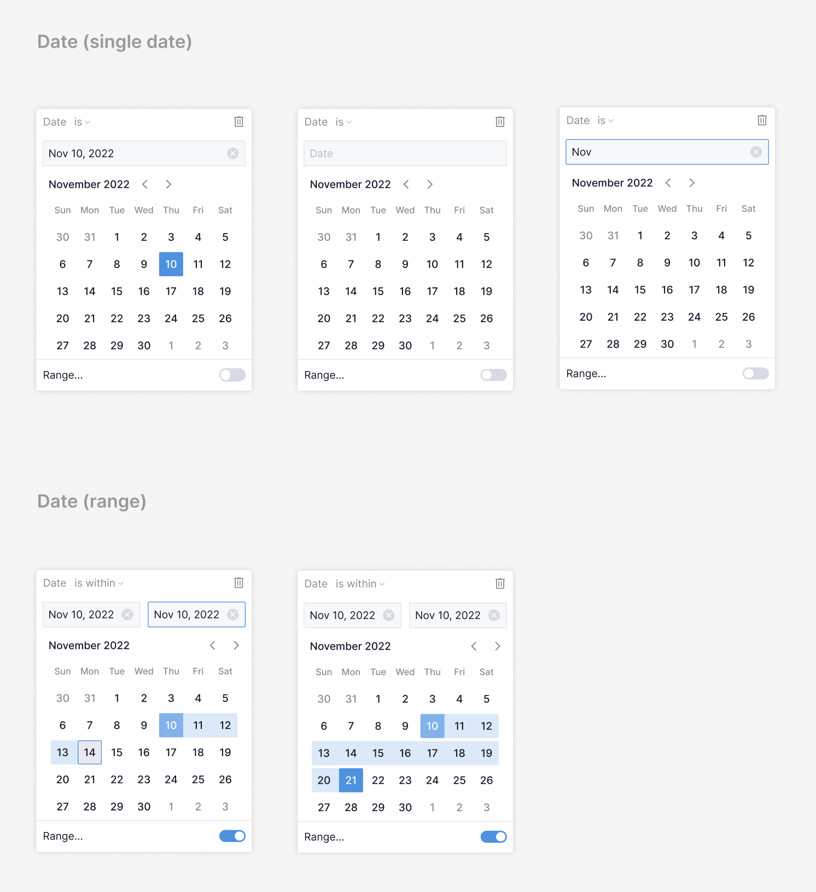

System context
Nodes & Links was an early-stage B2B SaaS product with no established design system or consistent design–engineering workflows. As the platform scaled across complex, data-heavy features, structure was needed to support increasing product complexity and maintainability.
My role
Joined as one of the first product designers, helping shape product direction, system structure, and design–engineering workflows. Introduced system-level thinking through reusable patterns, consistent interaction models, and closer alignment with frontend implementation.
Outcome
- Improved consistency across workflows and UI patterns.
- Reduced ambiguity between design and engineering.
- Enabled more scalable and maintainable feature development.
Overview
Nodes & Links partners with global organisations across energy, construction, aerospace, and defence to improve project delivery through AI-driven insights. Their platform enables teams to access critical project knowledge, supporting faster and more efficient decision-making.
I joined in January 2022, working on the core product as it evolved from early-stage foundations into a more structured platform. My work focused on complex, data-heavy workflows including risk analysis, scheduling, and infrastructure planning.
Design ↔ engineering alignment
- Worked closely with frontend engineers to ensure designs translated clearly into implementation, aligning on component structure, interaction patterns, and state handling.
- Established clearer design-to-engineering workflows and documentation, reducing handoff ambiguity and improving consistency across features as the product scaled.
Product areas
- Quantitative Schedule Risk Analysis (QSRA)
- Risk Drivers
- Milestone Trend Analysis
- Multi-Factor Authentication
- Resource management workflows
Work examples
Due to confidentiality, I am unable to share full product screens. However, the following reflects the nature of my work:
- Defined and evolved a design system including colour, typography, and component patterns.
- Established reusable component libraries and interaction patterns.
- Created documentation and guidance for developers to support consistent implementation.
- Recorded walkthroughs and usage examples to reduce ambiguity in distributed teams.
- Improved and refined existing product screens to increase clarity and usability.
- Mentored a junior designer and contributed to growing design practice within the team.
Design system and component library
Developed a suite of reusable components and patterns to support consistency across the product, including:
- Form fields and validation states.
- Search and filtering patterns.
- Date and input components.
Collaborated with engineering to integrate Storybook and Chromatic into workflows, supporting iterative development and improving visibility between design and implementation.
Components were documented and communicated through annotations and recorded walkthroughs, helping ensure clarity in a fully remote team environment.
Examples below illustrate component structure, though not full product context due to confidentiality.



Team and environment
Worked within a cross-functional team of 15–20 engineers and data scientists, organised into two product squads. Collaborated closely with product managers and engineers in an Agile environment with regular stand-ups, sprint planning, and retrospectives.
Approach
- Worked with stakeholders and domain experts to understand complex workflows.
- Designed and iterated through prototyping and feedback.
- Balanced usability with the constraints of data-heavy systems.
Closing
This work centred on introducing structure into a complex and evolving product. The primary impact was not just individual features, but improving how the system scaled – through clearer patterns, better alignment with engineering, and more consistent product foundations.
Detailed design and implementation examples are available on request.